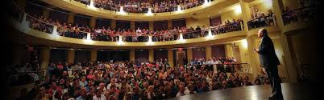
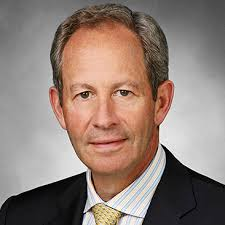

History
A Humble Beginning
A Humble Beginning TechCon, now one of the most recognized names in global technology events, had a modest start in 2008. Founded by a small group of passionate engineers and entrepreneurs in San Francisco, TechCon was initially a one-day meetup aimed at uniting developers, innovators, and investors under one roof. With just under 500 attendees in its first year, the event focused on emerging web technologies, open-source collaboration, and bridging the gap between academia and industry.
Growing Into a Global Phenomenon
Over the years, TechCon grew rapidly in size, scope, and influence. By 2012, it had evolved into a multi-day international conference, attracting participants from around the world. Keynotes began to feature not just technologists, but also futurists, policy makers, and leaders from companies like Google, Microsoft, and IBM. Themes began to broaden — encompassing artificial intelligence, cybersecurity, blockchain, sustainable tech, and more. TechCon also launched its now-famous Startup Launchpad, providing a global stage for early-stage startups to pitch to investors and secure partnerships.
Mission
"To inspire, connect, and empower the global tech community by providing a platform for innovation, collaboration, and thought leadership — driving meaningful impact through emerging technologies, inclusive participation, and forward-thinking dialogue."
Past Speakers
past speakers include:
- Ajit Manocha, then-CEO of GLOBALFOUNDRIES, delivered the Banquet keynote
- Dr. Nido Qubein, President of High Point University, opened the conference
- David Berz, Global Learning Leader at LinkedIn, spoke during a Sunday evening working session

